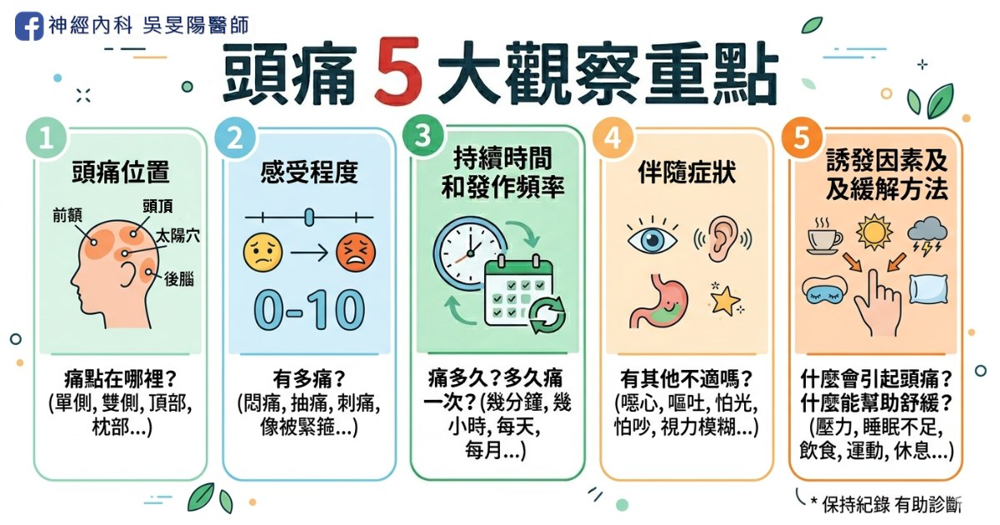
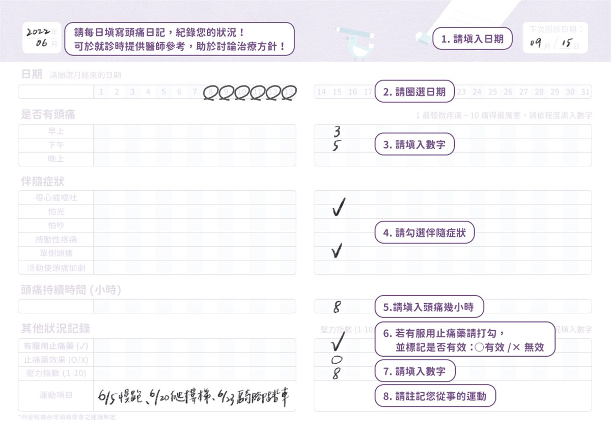
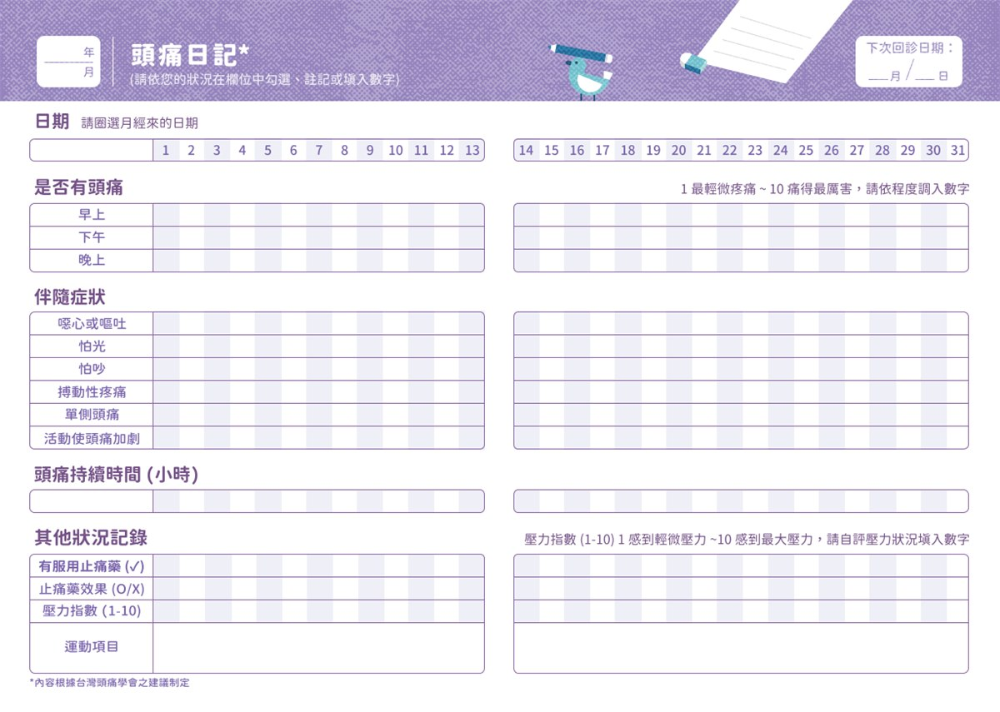

頭痛看診前必讀，醫生會問我什麼問題？
在神經科的門診，頭痛就醫者不在少數，若要具體地描述頭痛的細節，可不是件容易的事情！在看診前，先問問自己以下問題集，幫助醫生快速掌握你的狀況、準確診斷病因，並更有時間討論下一步的治療方向喔！

頭痛 5 大觀察重點
1. 頭痛位置
- 部位：單側(右邊 or 左邊)、雙側、整個頭
- 具體位置：額頭、太陽穴、後腦勺
若頭痛不止一次，可留意每次痛的位置是否不同，或有固定區域。
頭痛位置與原因的關聯，詳細文章：
2. 感受程度
- 感受：痛的感覺如何？(悶痛、脹痛、抽痛、刺痛、像被金箍圈套住的緊縮性疼痛、或有東西在跳的搏動性疼痛)
程度：以 0 到 10 分來評估頭痛程度，0 分是完全不痛，10 分代表最痛的程度。
- 未吃止痛藥幾分？吃藥後改善到幾分？
- 是否影響生活或工作、是否需請假、或工作效率變差
3. 持續時間和發作頻率
- 持續時間：每次頭痛都痛多久？(幾秒、幾分鐘、幾小時或整天)
- 發作頻率：頭痛多久發作、次數(每天、每週、每月發作幾次？)
這些數字資訊都是非常重要，尤其發作頻率，更決定要開什麼藥物給你！
更多偏頭痛藥物治療介紹，詳細文章：
4. 伴隨症狀
- 伴隨症狀：發作時，是否有噁心、嘔吐、怕光、怕吵、流眼淚、流鼻水、眼睛變紅腫、視力模糊、複視、異常亮點？
- 危險警訊：是否突然劇烈頭痛(雷擊性頭痛)，或伴隨發燒、脖子僵硬、手腳無力麻木
頭痛的 10 大危險警訊，詳細文章請點：10 大危險頭痛警訊！哪些情況需要看醫生，一次告訴你
5. 誘發因素及緩解方法
- 誘發因素：是否吃了特定食物(巧克力、起司、咖啡)、正在做什麼活動(運動、上班、睡覺、經期)
- 緩解方法：舒緩方式(平躺、休息、按摩、喝水)
飲食與偏頭痛的關連，有興趣請參考：改善偏頭痛，該吃什麼呢？加分飲食 vs 地雷食物清單
過去病史、就醫史及家族史
- 過去病史：是否有慢性病、曾動過手術、頭部外傷？
- 就醫史：是否曾接受過頭痛相關檢查(影像檢查 or 抽血檢驗)
- 家族史：家中成員是否也有頭痛問題
有接受過相關檢查者，建議攜帶影像光碟、或過去就醫紀錄、處方籤，提供給醫師參考。
用藥紀錄及療效
- 用藥紀錄：目前服用的藥物、劑量、服用頻率？(含處方藥、非處方藥、保健食品、中草藥)
- 療效：吃藥反應為何？頻率或疼痛程度降低
- 副作用：是否有過敏反應
生活習慣
- 飲食運動：日常三餐是否規律、作息是否正常、有無喝咖啡的習慣、有無運動習慣。
- 睡眠狀況：是否有失眠、睡眠不足、或其他睡眠問題。
- 壓力心理：是否有壓力過大、焦慮或憂鬱的情況。與身心科相關的症狀，常常會和偏頭痛一起出現！

截自 台灣頭痛學會網站之 頭痛日記與評估量表
頭痛病友小幫手│頭痛日記
好好紀錄頭痛日記，有 2 個好處：
- 準確診斷治療：常遇過病人說自己痛 2～3 天/月，實際記錄才發現每月都痛 10 幾天！偏頭痛的藥物治療，將取決於你的頭痛頻率，因此準確記錄是十分重要的。
- 經濟考量：健保無法給付便要自費，如能申請健保，將可省下一筆醫藥費。頭痛日記，會是必要的審核文件之一。
未來也更利於健保申請通過長效針劑：以肉毒桿菌試算，單次價格約 1.5 ~ 2 萬，每 3 個月施打一次，一年費用約 6 ~ 8 萬；單株抗體又更貴，一年約為 12 萬。
長效針劑詳細介紹，請點：偏頭痛「預防藥治療」攻略：長效針劑 (二)
門診掛號可索取紙本，電子檔頭痛日記電子檔

截自 台灣頭痛學會網站之 頭痛日記與評估量表
結語
頭痛看診前的準備工作也是不少！包含詳細的頭痛頻率、病史紀錄和用藥記錄，也需留意 10 大危險警訊，以上資料能幫助神經科醫師更有效地診斷與治療，你也更了解自己的身體健康。
延伸閱讀
頭痛入門必讀
頭痛地圖：痛哪裡找哪裡
偏頭痛病友請進
參考資料
- 偏頭痛就醫前應準備哪些資料？（台灣頭痛學會）
- 頭痛日記與評估量表（台灣頭痛學會網站提供）